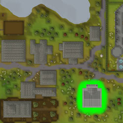

")
Gerichtsverfahren
Nur RuneScape-Mitglieder werden vor Gericht zugelassen. Wenn ihr euch anmeldet, könnt auch ihr dieses Feature nutzen.
Einführung

Nachdem ihr im Fall der Sinclairs bereits grundlegende Kenntnisse im Bereich Strafrecht sammeln konnte, würde euch das Gericht im Dorf der Seher jetzt gerne als Verteidiger oder Staatsanwalt anheuern. Die Stellenangebote werden in Form von sogenannten Vorladungen verteilt, die ihr beim Angeln, Kämpfen oder Lösen von Hinweis-Schriftrollen findet. Im Abschnitt Erste Schritte erfahrt ihr mehr darüber.
Voraussetzungen
Ihr müsst den Fall der Sinclairs abschließen, um Vorladungen zu erhalten. Wenn ihr als Staatsanwalt für die Anklage arbeiten wollt, benötigt ihr Angriff mindestens auf Stufe 65. Als Verteidiger müsst ihr Verteidigung auf 65 trainiert haben. Ein Ring des Charos wäre ebenfalls hilfreich.
Bevor ihr eine Vorladung erhaltet, müsst ihr den Fall des Straßenräubers (Stufe 6) gegen Roger Murray abgeschlossen haben. Dieser Fall ist eine Art Einführung in die Arbeit als Rechtsverdreher und ihr benötigt keine Vorladung dafür.
Achtung -Wenn ihr eine Vorladung im Inventar oder im Bankschließfach habt, werdet ihr keine weiteren Vorladungen erhalten, bis der Fall abgeschlossen ist, oder ihr die Vorladung zerstört.
Erste Schritte

- Monsterbeute (unter anderem von Riesen, Paladinen, Trollen, Stahldrachen, Rubindämonen)
- Taschendiebstahl (unter anderem von Kriegern, Rittern, Paladinen, Gnomen, Helden und Zwergenhändlern)
- Schatullen beim Fischen
- Schatzsuche
Derzeit verfügbare Gerichtsverfahren:
- Der Straßenräuber (Stufe 6) gegen Roger Murray
- Der Fluss-Troll gegen den Staat
- Der betrunkene Zwerg gegen den Staat
- Der böse Zwilling gegen den guten Zwilling
- Räuber Plotzenhotz gegen den Staat
Die Vorbereitung auf einen Fall
 Bevor ihr einen Fall lösen könnt, müsst ihr euch gut vorbereiten. Zu allen Fällen gibt es drei Fallberichte, die im Aktenschrank im Erdgeschoss des Gerichts stehen. Ihr müsst euch diese gut durchlesen, damit ihr überzeugend argumentieren könnt. Merkt euch auch die Details, damit ihr im Gerichtssaal keinen Fehler macht.
Bevor ihr einen Fall lösen könnt, müsst ihr euch gut vorbereiten. Zu allen Fällen gibt es drei Fallberichte, die im Aktenschrank im Erdgeschoss des Gerichts stehen. Ihr müsst euch diese gut durchlesen, damit ihr überzeugend argumentieren könnt. Merkt euch auch die Details, damit ihr im Gerichtssaal keinen Fehler macht. 
Außerdem ist es wichtig, mit den Angeklagten in der Untersuchungshaft im Obergeschoss des Gerichtsgebäudes zu reden und weitere Informationen zum Fall aus ihnen herauszukitzeln.
Sobald ihr den Fall geknackt habt, könnt ihr die Treppe zum Gerichtssaal hinabsteigen. Normalerweise macht die Staatsanwaltschaft den Anfang und danach kommt der Verteidiger zu Wort. Unabhängig davon, welche Seite ihr vertretet, müsst ihr Beweisstücke vorlegen und Zeugen in den Zeugenstand rufen. Wählt mit Bedacht und präsentiert nur Beweise, die eure Argumente untermauern. Die Geschworenen geben euch eine Rückmeldung und sagen euch, ob eure Aussage dem Fall geholfen oder geschadet hat - oder keins von beidem.
Ihr könnt Zeugen verhören oder Gegenstände als Beweisstücke präsentieren, indem ihr mit dem Richter sprecht. Wenn ihr mit eurer Beweisführung fertig seid, sagt dem Richter, dass ihr euer Schlussplädoyer vor den Geschworenen halten wollt. Nach einer kurzen Zusammenfassung könnt ihr euch dann ein Mitglied der Geschworenen aussuchen, das ihr direkt ansprechen wollt. Überlegt euch, wen ihr am leichtesten auf eure Seite ziehen könnt. Die Geschworenen fällen dann ihr Urteil. Viel Glück!
![[Bild]](../../img/main/kbase/guides/repeatable/court/jury.jpg)
Belohnungen
Wenn der Richter zu euren Gunsten entscheidet, könnt ihr euch beim Gerichtsschreiber im Erdgeschoss des Gerichtsgebäudes eine Belohnung abholen. Was ihr bekommt, hängt von dem Fall und eurer Rolle (Verteidigung oder Staatsanwaltschaft) ab. Ihr erhaltet zwischen 2.000 und 8.000 EP und Belohnungsgegenstände für eure harte Arbeit.
 Falls ihr alle fünf Fälle abgeschlossen habt, bekommt ihr eine Anwaltsperücke, mit der ihr eure Freunde beeindrucken könnt.
Falls ihr alle fünf Fälle abgeschlossen habt, bekommt ihr eine Anwaltsperücke, mit der ihr eure Freunde beeindrucken könnt.
Entwicklerteam
Entwicklung: Nancy J
Leitender Designer: Mark O
Grafik: Alex R, Matt M
Qualitätssicherung: Nicola C, Reece W, Sarah J
Audio: Adam B

Weitere Artikel in Spaß für zwischendurch
|
|
|
Weiterführende Informationen Wenn euch dieser Artikel nicht weitergeholfen hat, könnt ihr in den folgenden Kapiteln der RuneScape-Webseite mehr Informationen finden:
|
|